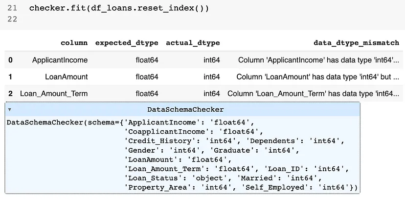
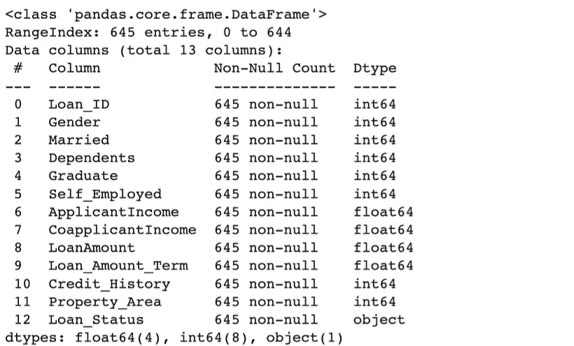

Data Validation
Misc
- Packages
- {pointblank} - This is a heavy-duty package that helps you validate all aspects of datatsets with extensive reporting capabilities.
- {{great_expectations}}
- {{pydantic}}
- Also see DB, Engineering >> Data Quality
Pipeline
- Collection
- e.g. people working in your stores, your call centrrs or perhaps as online support agents. It could be your online sign-up forms or physical documents that your agents must manually input into your systems
- Checks
- Completeness: The data being collected and captured is complete (not NULLs), i.e. all mandatory fields have information added, and it is not missing any key data points.
- Uniqueness: The data is kept as unique as possible, i.e. if a client already has an account, another account is not being set up. If the mobile number already exists in the system, the current order is linked to the old order etc.
- Validity: The data being captured conforms to the corporate standards, i.e. account number is eight digits long and starts with a number 9 is conformed with at the time of capturing
- Transfer
- Make sure that the data sent is the same as the data received
- Check
- Consistency: The data is consistent across all the tables with the same values. This could translate to well-reconciled data between source and target, i.e. 100 records sent, 100 records received. Or that the table has specific values like date of birth and is consistent with other tables that have the same or similar information. Orphaned records (exist in A and not in B) should be highlighted, monitored and remediated.
- Storage
- Data spends most of its time here, so take advantage of the time that it’s not being used in a product.
- Checks
- Completeness: Null reporting — how many columns are Null, and why are they Null? Can we change the data capture process to avoid these Nulls coming through?
- Uniqueness: Are non-mandatory attributes unique? Are duplications going to impact downstream reporting?
- Transformation
- Often the place where most validation takes place.
- Checks
- Timeliness: Ensure data is available promptly to meet agreed SLAs.
- Consistency: Reconciliation checks from source to target
- Example: tolerance checks on tables processed; we generally receive 100 records, and we have received just two records today; how do we alert the user of this discrepancy?
- Validity: Non-conformance under the validity dimension could render the transformation and subsequent consumption useless. This is especially helpful when data capture doesn’t have robust controls.
- Consumption
- Ensure the business problem is solved
- Checks
- Accuracy: The data is accurate enough for reporting, such as board metrics. Account numbers are associated with the correct customer segments, or the date of birth is not the default value like 01/01/1901.
- Timeliness: It is not early that it excludes some recent records. It is not late that it misses the deadline for reporting. All agreed SLAs must be met to ensure the data consumption layer has the data available when required and stays fit for purpose.
Python
- Misc
- Comparison between {{pydantic}} and {{pandas_dq}}
- Declarative syntax: arguably, Pydantic allows you to define the data schema and validation rules using a more concise and readable syntax. This can make it easier to understand and maintain your code. I find it super helpful to be able to define the ranges of possible values instead of merely the data type.
- Built-in validation functions: Pydantic provides various powerful built-in validation functions like conint, condecimal, and constr, which allow you to enforce constraints on your data without having to write custom validation functions.
- Comprehensive error handling: When using Pydantic, if the input data does not conform to the defined schema, it raises a ValidationError with detailed information about the errors. This can help you easily identify issues with your data and take necessary action.
- Serialization and deserialization: Pydantic automatically handles serialization and deserialization of data, making it convenient to work with different data formats (like JSON) and convert between them.
- Comparison between {{pydantic}} and {{pandas_dq}}
- Example: {{pydantic}}
Set schema and create sample data
# data validation on the data dictionary from pydantic import BaseModel, Field, conint, condecimal, constr class LoanApplication(BaseModel): Loan_ID: int Gender: conint(ge=1, le=2) Married: conint(ge=0, le=1) Dependents: conint(ge=0, le=3) Graduate: conint(ge=0, le=1) Self_Employed: conint(ge=0, le=1) ApplicantIncome: condecimal(ge=0) CoapplicantIncome: condecimal(ge=0) LoanAmount: condecimal(ge=0) Loan_Amount_Term: condecimal(ge=0) Credit_History: conint(ge=0, le=1) Property_Area: conint(ge=1, le=3) Loan_Status: constr(regex="^[YN]$") # Sample loan application data loan_application_data = { "Loan_ID": 123456, "Gender": 1, "Married": 1, "Dependents": 2, "Graduate": 1, "Self_Employed": 0, "ApplicantIncome": 5000, "CoapplicantIncome": 2000, "LoanAmount": 100000, "Loan_Amount_Term": 360, "Credit_History": 1, "Property_Area": 2, "Loan_Status": "Y" } # Validate the sample data using the LoanApplication Pydantic model loan_application = LoanApplication(**loan_application_data)Validate and print report
# data validation on the data dictionary from pydantic import ValidationError from typing import List # Function to validate DataFrame and return a list of failed LoanApplication objects def validate_loan_applications(df: pd.DataFrame) -> List[LoanApplication]: failed_applications = [] for index, row in df.iterrows(): row_dict = row.to_dict() try: loan_application = LoanApplication(**row_dict) except ValidationError as e: print(f"Validation failed for row {index}: {e}") failed_applications.append(row_dict) return failed_applications # Validate the entire DataFrame failed_applications = validate_loan_applications(df_loans.reset_index()) # Print the failed loan applications or "No data quality issues" if not failed_applications: print("No data validation issues") else: for application in failed_applications: print(f"Failed application: [{application}]{style='color: #990000'}")
- Example: {{pandas_dq}}
Check schema
from pandas_dq import DataSchemaChecker schema = { 'Loan_ID': 'int64', 'Gender': 'int64', 'Married': 'int64', 'Dependents': 'int64', 'Graduate': 'int64', 'Self_Employed': 'int64', 'ApplicantIncome': 'float64', 'CoapplicantIncome': 'float64', 'LoanAmount': 'float64', 'Loan_Amount_Term': 'float64', 'Credit_History': 'int64', 'Property_Area': 'int64', 'Loan_Status': 'object' } checker = DataSchemaChecker(schema) checker.fit(df_loans.reset_index())- Shows 3 variables with incorrect types
Fix issues
df_fixed = checker.transform(df_loans.reset_index()) df_fixed.info()- Variables have been cast into the correct types according to the schema